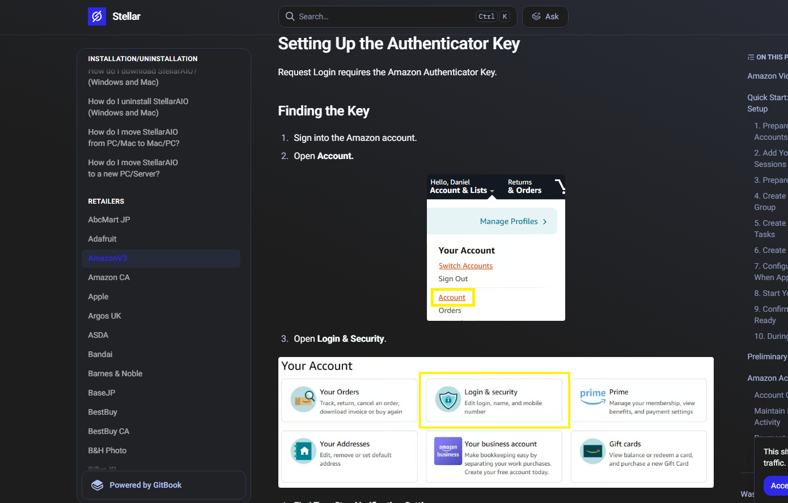
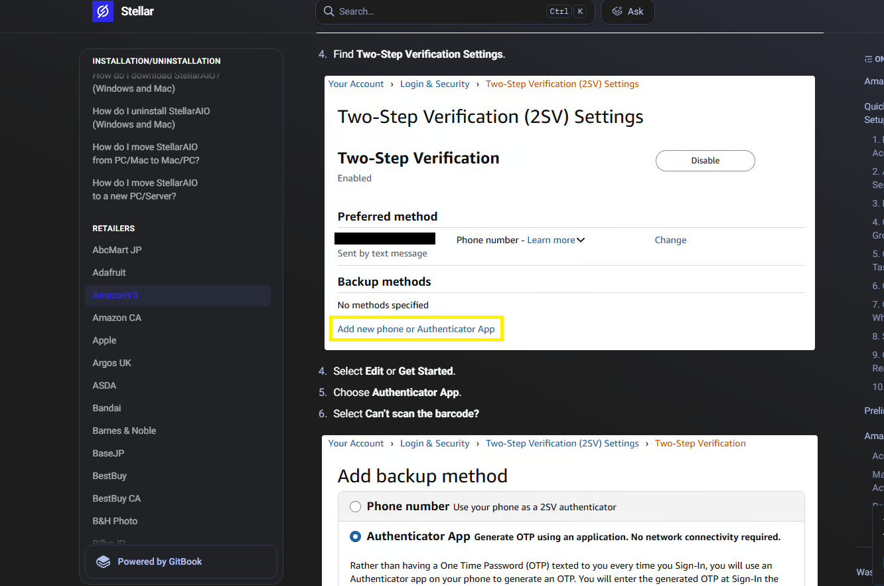
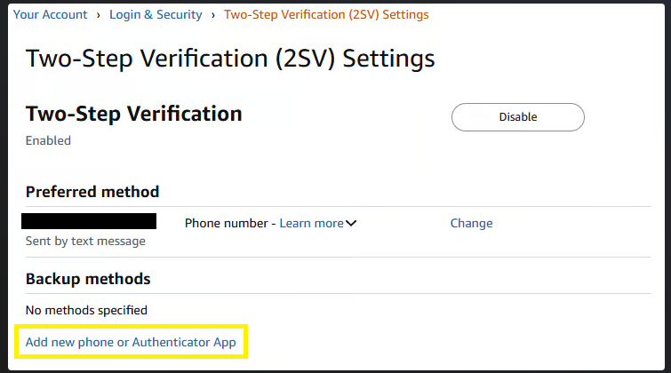
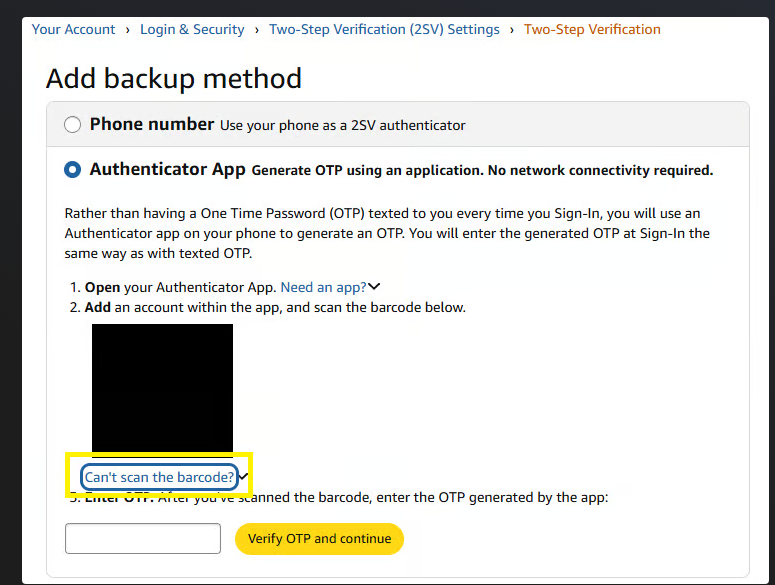
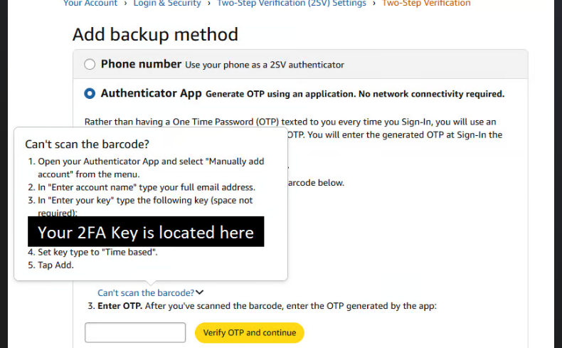

🔑 Finding Your Amazon 2FA Authenticator Key
Follow these steps exactly, then paste the key into the Amazon 2FA Authenticator Key field on the sign-up form.
Why this is needed: Amazon requires two-step verification (2FA) on the account, and it needs the actual authenticator key (not just a one-time code) so it can generate fresh login codes automatically every time it checks out for you.
1Sign into your Amazon account, then open Account
Click Account & Lists in the top right, then click Account.

2Open Login & security
From Your Account, click the Login & security tile.

3Add a new Authenticator App
Under Two-Step Verification (2SV) Settings → Backup methods, click Add new phone or Authenticator App.

4Choose Authenticator App, then click "Can't scan the barcode?"
Select the Authenticator App option. Don't scan the QR code — click Can't scan the barcode? instead. That's what reveals the actual key as text.

5Copy the key and add it to your authenticator app
A popup shows the key. Follow it exactly:
- Open your authenticator app (Google Authenticator, Authy, etc.) and choose "Manually add account".
- For the account name, enter your full email address.
- For the key, enter the exact string Amazon just showed you (spaces don't matter).
- Set the key type to "Time based".
- Tap Add.

Copy this same key string for the sign-up form
This is what goes in the "Amazon 2FA Authenticator Key" field. Example of what it looks like (yours will be different):
H6MU JLST XTLF Y7ZK 3NGR KT46 HPRD 7KKA GKWJ BTUP PZGH DZN5 SL4Q
6Enter the generated code, then Verify OTP and continue
Your authenticator app will now be generating a 6-digit code. Type that code into the box on Amazon's page.
⚠️ Don't skip this: you must click "Verify OTP and continue" after entering the code. The key isn't actually active on your account until you press that button — if you close the page without clicking it, the whole setup didn't take effect and logins won't work.
7You're done
Save the key somewhere safe, then paste that same key into the Amazon 2FA Authenticator Key field back on the Swyft ACO sign-up form.
← Back to sign-up form